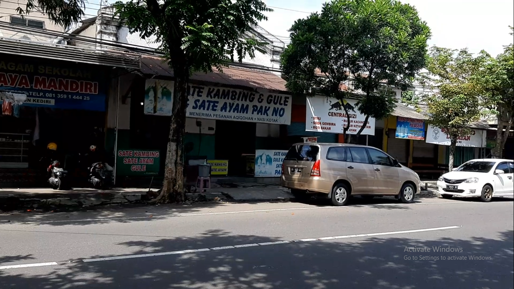

Hi, Pengunjung!
Website ini membahas sejarah Kediri Stoomtram Maatschappij.
Sejarah Kediri Stoomtram Maatschappij
Kediri Stoomtram Maatschappij atau KSM didirikan pada tahun 1897. Perusahaan ini bertujuan untuk menghubungkan Kediri dengan daerah sekitar guna mempercepat transportasi hasil perkebunan.
Pada masa kejayaannya, KSM menjadi salah satu moda transportasi utama di Kediri.
Peninggalan Kediri Stoomtram Maatschappij
Beberapa peninggalan KSM yang masih ada hingga saat ini antara lain:
- Bekas Stasiun Pare. Saat ini menjadi warung sate
 - Rumah dinas pegawai KSM

- Foto trem uap yang berhenti di Halte Karangdinoyo, Kepung

- Peta jalur KSM tahun 1914

Kontak Kami
Jika Anda memiliki pertanyaan atau informasi tambahan mengenai sejarah KSM, silakan hubungi kami melalui formulir di bawah ini: